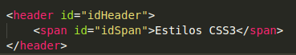
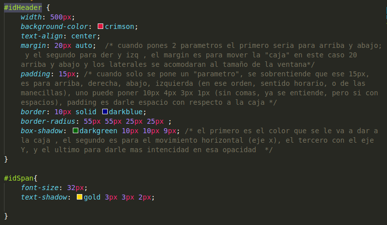

Primera Linea
Segunda Linea
Tercera Linea
Existen diversas formas de emplear como "enlazar" el css en tu hml5:
-Hacer a cada etiqueta un
atributo en especifico, pero esto ya hace tiempo que no se usa, ya que no se puede reutilizar codigo de
CSS3 (NO RECOMENDADO)
- En el head se puede agregar una etiqueta style y ahi poner todo
el codigo CSS3 (NO RECOMENDADO)
- Hacer un archivo por separado con extencion CSS3, con el
cual solo debes enlazarlo en el html5, con la etiqueta link debe ser escrita en el documento html5 en la seccion del head (RECOMENDADO)
En el CSS3 existen los selectores, los cuales ... FALTA VER BIEN SU DEFINICION hay diferents formas de llamar a un selector para que eliga a la etiqueta especifica que queramos, tenemos:
- Primera forma, a la etiqueta correspondiente, se le agrega el atributo name="nombreX", y en el css3 se pone el nombreEtiqueta [name="nombreX"] { color: blue}
Pero mas nos enfocaremos o mostraremos mas, cuando se aplique el id o class como atributos para la etiqueta correspondiente y como usar los selectores correspondiente para el archivo css3
Mostraremos el codigo del css y sus id de las etiquetas y a continuacion lo que se muestre sera lo que el codigo hace
 